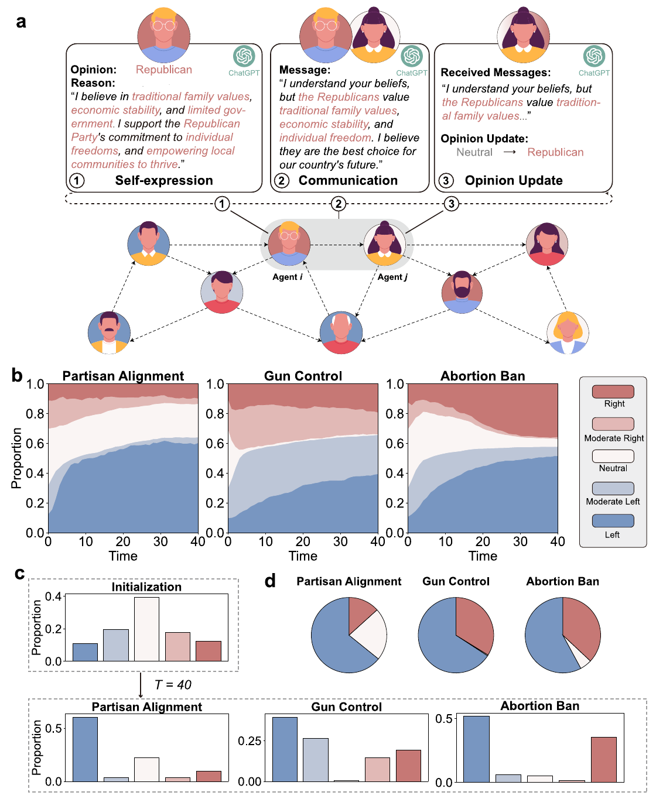
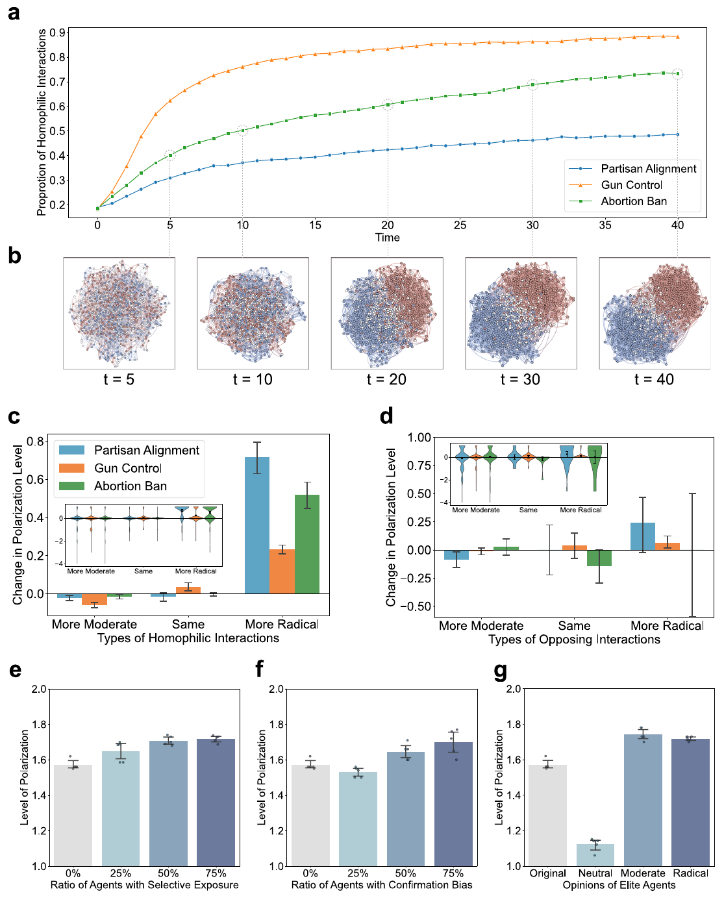
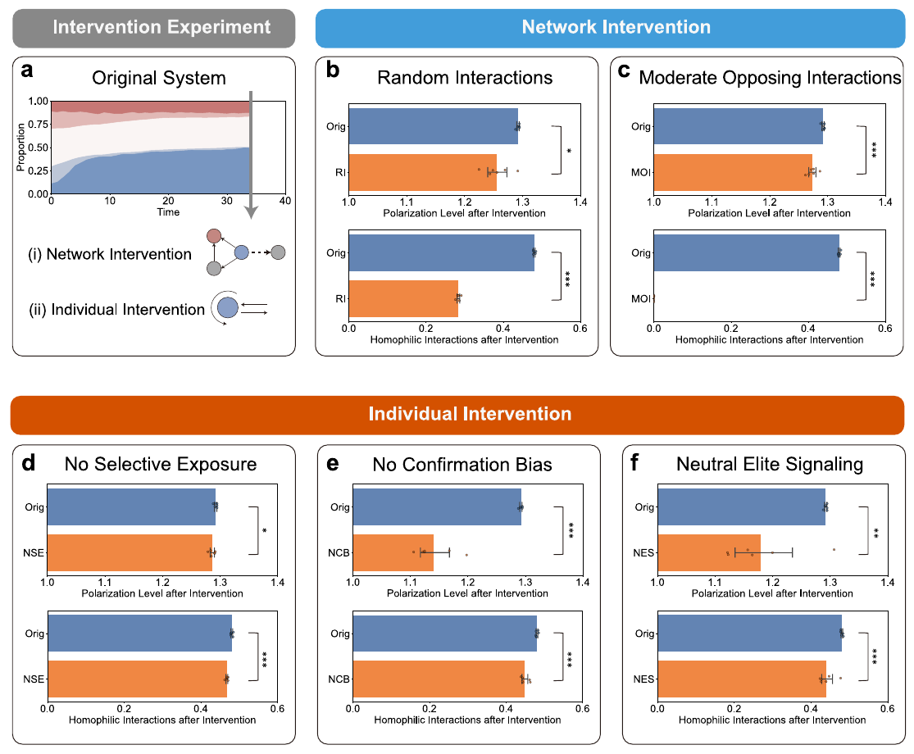

Emergence of polarization in networks of large language model agents：交往选择与意见更新如何共同产生极化
1. 背景与核心判断
这篇论文把“和谁交流”与“交流后相信什么”放进同一个循环，观察到 LLM 代理逐渐形成同质群体，并在政治议题上产生意见分化。 更值得注意的是：让代理检查自己的表达是否符合当前立场，可以减少角色不一致，却没有消除群体极化。单个代理更自洽，与整个系统更容易达成共识，是两个不同目标。
我认为它的价值在于提供可干预的多代理仿真环境：可以分别改变交往网络、信息采纳方式和外部消息，追踪群体结果。它对真实社会的解释力仍有限，尤其需要区分立场变极端、两派分裂、网络分隔；论文主指标只直接测量第一件事。
论文发表于 Nature Communications 17, 11463（2026），官网列出的在线日期为 2026-10-08。作者来自清华大学、天津大学、阿姆斯特丹大学、芝加哥大学与 Santa Fe Institute。期刊页面 · 官方补充材料 · 代码与数据。
阅读范围：用户提供的 14 页期刊全文、Methods 与四张主图；官方 56 页补充材料中的系统提示、自检、网络替换、跨模型、干预、初始条件、议题反例和统计检验说明。本次未运行代码或复现实验，以下结果均为作者报告。补充图号以期刊版为准。
2. 关键问题：交流为什么没有把意见拉向中间？
沿用 Fig. 1a 的示意案例：一个支持共和党的代理，把传统家庭、经济稳定与个人自由作为自己的理由，再向一个中立代理发送说服性消息。接收方汇总消息后，将立场从中立改为支持共和党。这里是作者展示流程的示意，不能当作某个真实代理的完整实验轨迹。
只看这次对话，改变立场并不奇怪。问题在下一轮：接收方现在会给新立场生成理由，也会决定是否继续与原对象交往。如果它越来越常接触同立场的人，再把收到的信息整合成更坚定的理由，交往选择会改变信息输入，意见变化又会改变交往选择。局部都在进行合理的语言交流，整体却未必走向共识。
单独测一次模型的政治倾向，无法观察这个循环。固定网络、按预设方程平均意见的模型，又会把关键行为规则事先写死。本文让 LLM 同时承担表达、选择与更新，以考察这些行为组合后会产生什么群体现象。（Introduction；Methods M1）
3. 关键方法：让语言互动与有向网络一起演化
3.1 同一个代理，一轮里做什么？
沿着上面的共和党支持者与中立代理，系统按三个阶段运行：
- 表达立场。 输入议题与当前立场，让代理生成约 50 词的理由；提示明确要求“persuade yourself”。这段理由被保存为状态记忆，为后续交流提供语义内容。
- 选择对象并交流。 代理决定是否继续联系已有对象；拒绝后由系统随机分配新对象，再结合双方立场、理由及对方此前发来的消息生成说服性消息。交互建立有向连接，影响下一轮可以继续联系谁。它不能扫描全体代理、直接挑出最喜欢的人。
- 更新立场和理由。 接收方根据收到的邻居消息重新报告自己的立场，并生成相应理由。中立代理若在这一轮转为支持共和党，新状态就进入下一轮的表达和选人过程。
模型参数没有在互动中训练。 变化的是代理的文本状态、离散立场和连接关系。与传统意见平均模型相比，新增的自由度是：论据内容、是否维持交往、怎样解读消息，都由 LLM 提示调用决定。作者没有显式写入“优先同阵营”的规则，但预设了说服任务、立场类别、更新流程和候选对象生成方式；“自发涌现”需要放在这些设计条件下理解。（Methods M1；Supplementary Methods §1.1）

来源：原文 Fig. 1，用户 PDF 第 3 页，裁去页眉、图注与页脚。上方看表达、说服、更新如何连接；下方看中立代理减少后，哪些立场的人数增加。图内头像注明由 Magnific 设计。文章许可为 CC BY 4.0。
3.2 为什么还要加入 self-regulation？
角色扮演不一定忠实于指定状态。原文举出的异常是：被设为中立的代理，在说明理由时却强烈支持民主党。若每轮都有这种漂移，群体结果可能主要反映底层模型偏向，而不全是交往网络产生的影响。
作者加入生成 → 自检 → 检查未通过时重新生成的循环。三个检查并不相同：表达阶段看理由是否反映当前立场；通信阶段问消息是否“persuasive enough”；更新阶段结合旧立场、旧理由与收到的消息，判断新决定是否“plausible and valid”。原文还设有最大重试次数，超过后该代理在当前阶段不行动。（Methods M3；Supplementary Methods §1.3）
自检同时引入了对说服力的筛选和对是否行动的筛选。 检查器与生成器都依赖 LLM，这些标准可能改变消息强度、参与率和代理的更新倾向。因而“自检后仍极化”支持极化不完全由明显角色漂移解释，但不能单凭这一对照排除全部提示设计或模型偏向的影响。
3.3 实验规模与“极化”到底怎样计算
主文使用 GPT-3.5、temperature=1、zero-shot；网络实验各有 1000 个代理，个体机制实验因成本限制使用 100 个代理。每个系统只讨论一个议题，主文为党派倾向、枪支管制和堕胎禁令。初始意见接近高斯分布，初始网络为 Watts–Strogatz 小世界网络，重连概率为 0.001；主要轨迹展示到 40 轮。这不是从空白人群与空网络生成的社会。（Methods M1；Figs. 1–4）
代理自报五级立场，编码为 $k\in\{-2,-1,0,1,2\}$，左右两端对应不同议题的政治方向。令 $f_k$ 为处于立场 $k$ 的代理比例，主指标为：
它表示平均离中立有多远。为便于理解构造两个极端例子：所有代理都在 $+2$，与一半在 $-2$、一半在 $+2$，得分同样为 2。前者是一边倒的极端共识，后者才是两极分裂。因此，读结果时必须同时看完整意见分布、左右阵营比例与网络结构，不能仅凭这个分数断言社会分裂程度。（Methods M5；上述例子为笔记者构造）
4. 关键证据：先排查角色漂移，再看群体如何分化
4.1 中立减少，是网络作用还是模型本身偏向？
在原始代理组中，中立占比从初始约 40% 降到党派议题的 22.5%、枪支管制的 0.4%、堕胎禁令的 5.1%，同时出现左右阵营，且整体偏左。（Fig. 1；Results，第 4 页）
作者随后设计了一个有用的最小对照：把同立场的两个代理配对，只交谈一轮，尽量去掉复杂网络和跨立场说服。结果发现，右倾代理有时会转向左侧，左倾代理却很少发生对称的反向变化。这个对照使“先排查个体角色漂移，再解释群体结果”的次序变得清楚。（Fig. 2a–b；Methods M2）
加入自检后，作者的 self-inconsistency 指标下降 9.4%–52.2%，群体仍出现意见分化，左右比例比原始组更平衡。（Fig. 2c–d）这里的百分比是不一致指标降幅，不是极化降幅。该指标以“同立场双方交流后，理想情况下立场不变”为参照，计算转移矩阵的距离；它也包含作者对合理更新的假设，而非独立人工标注的错误率。（Methods M5）
这组结果最稳妥的解释是：明显的角色不一致解释了部分左右不平衡，但不足以解释全部群体分化。它没有证明代理已经无偏，也没有证明自检后的分布就是人类社会的真实分布。
4.2 同阵营交往增多，是否伴随更极端的意见？
三个议题中，同阵营交互比例相对初始值增加 156.8%–382.7%，最终达到 48.5%–88.3%；堕胎禁令的网络图尤其清楚地分成两个阵营社区。（Fig. 3a–b）当把自主形成的网络换成随机或静态网络时，作者报告系统更容易被单一阵营主导，提示网络演化影响的不只是极端程度，也包括不同阵营能否同时保留。（正文第 7 页，指向 Supplementary Fig. S14）
作者再按邻居的立场与激进程度比较互动后变化：接触更极端的同阵营邻居，与自身进一步激进化相联系；遇到对立阵营也不总能使自己温和化。（Fig. 3c–d）但逆火现象在不同议题和条件下并不稳定，部分误差条跨零。这些条件分组与轨迹分析呈现了类似回音室和逆火的行为模式，尚不能独立证明内部心理机制。

来源：原文 Fig. 3，用户 PDF 第 6 页，裁去正文和页眉页脚，CC BY 4.0。a–b 展示“谁与谁交流”的变化，c–d 才展示意见如何随邻居条件变化；不要把网络分群图本身当作因果证据。e–g 的误差条基于末尾五个时间点，详见下文。
这种分化有议题边界。 补充实验中，移民限制议题仍出现分化；讨论地平说时，所有代理却在 10 轮内强烈反对地平说、形成共识。这个反例限制了“长期交流就会极化”的概括，也提醒我们，立场离中立更远可以对应更正确的事实共识。（Supplementary Note 13；Fig. S56）
跨模型证据也要分开读：GPT-4o、ChatGLM 和 Llama-3 有从头运行的实验；DeepSeek-V3 的展示是从 GPT-3.5 中途切换，承接了已有网络与交互状态。前者支持模式不只出现在 GPT-3.5，后者更多检验既有分化是否会被换模型逆转。Llama-3 的原始倾向还与其他模型相反；Claude-3 因政治问题响应率约 10% 被排除，不能算作同样结果的复现。（Supplementary Note 6；Figs. S16–S21）
4.3 已经分化后，改变网络与改变信息采纳，哪个更有效？
作者在已形成极化的党派系统中，于 $t=35$ 至 $t=40$ 施加干预，以继续按原规则运行的系统为对照。所有策略在作者的时间点检验中均达到显著，但效应大小差别很大。（Methods M4；Fig. 4）
| 策略 | 改了什么 | 观察与边界 |
|---|---|---|
| RI：随机交互 | 用随机对象替代已有交往结构 | 同阵营交互明显减少，极化指标只小幅下降 |
| MOI：温和反方交互 | 只接收温和对立立场的消息 | 论文概述意见变化约 2%，没有消除既有分化 |
| NSE：不选择性接触 | 提示代理愿意与不同意见者交流 | 效果有限；在已稳定网络中，这种倾向未充分转化为新的多样输入 |
| NCB：不带确认偏向 | 提示代理开放地接受不同意见的说服 | 极化指标相对对照下降 11.8%，为五种策略中最大 |
| NES：中立意见领袖 | 引入向全体发送非个性化中立消息的代理 | 极化指标下降 8.8%；这里同时改变了信息供给 |
原文有一处不一致：补充 Note 7 第 21 页将 NSE 列为效果最好的策略之一，但主文、Fig. 4 和该节后文均将其描述为弱干预。上表按主文与主图记录；该处疑似策略名称笔误，尚未获作者确认。
这一对照支持一个具体判断：在本文后期干预条件下，只让不同意见相遇，弱于同时改变信息如何被采纳，或加入中立信息。 NSE 的弱效果尤其重要，说明不能把结果概括成“所有个体干预都优于网络干预”。也不能把“prompt 要求开放”直接等同于现实中可实施、同等成本的人类干预。

来源：原文 Fig. 4，用户 PDF 第 8 页，裁去图注和正文，CC BY 4.0。每格上图为极化指标，下图为同阵营交互比例；RI、MOI 大幅改变下图，却没有等幅改变上图，正是这组实验的主要信息。
统计单位限制了置信度。 Fig. 4 的 $n=6$ 是干预后的六个时间点，Fig. 3e–g 的 $n=5$ 是末尾五个时间点，并非六次或五次独立仿真。连续时点可能相关，1000 个相互作用的代理也不是 1000 个独立样本。补充 Note 14 报告了正态性、等方差检查及部分非参数稳健性检验，但这些不能替代跨独立运行的不确定性评估。Note 12 改变初始网络和意见分布后仍观察到分化，提供了条件稳健性证据；它与主图时间点误差条所衡量的波动是不同层次。
5. Insights：下一步最该检验什么
自洽检查可能同时改变社会动力学。 自检减少了角色漂移，而极化仍存在；这使它成为必要的机制对照，也使它成为新的实验变量。我会分别消融表达一致性检查、说服力检查、更新合理性检查，并报告重试和不行动比例，判断极化变化来自角色更稳定、消息更有说服力，还是参与过程发生了选择偏差。这个实验尚未由上述结果完成，不能把自检后的系统当成无干预的自然基线。
用三个结果维度替代单一极化分数。 平均离中立距离会混合“一边倒”与“两极分裂”，而本文的网络替换实验恰好会改变这两种状态。复用该环境时，我会同时报告完整五级分布、左右阵营比例及网络同配性，并在独立运行层面比较终态。否则，一种策略可能只是把两派推成同一极端阵营，却在某些摘要统计上显得成功。
“看到反方”与“采纳反方信息”应成为两个独立控制变量。 Fig. 4 显示，重连网络可明显改变接触对象，却只轻微改变立场；NCB 的收益则来自改变信息处理要求。这个分离适合迁移到多代理讨论评测：固定输入消息，只改采纳规则；再固定采纳规则，只改通信图，比较群体结论是否更接近可验证答案。补充 Fig. S28 的另一种开放性诱导单独使用时效果也很小，与反方接触结合才明显改善；它进一步说明信息输入和采纳规则要联合检查。对于事实任务，还必须额外检查正确率。
本文把自身定位为产生假设的合成试验台，这一表述与证据相称。与已知社会现象定性相似，还不足以替代人类数据校准、独立人类实验或现实干预效果验证。（Discussion，第 10 页）
6. 连接与发现
- MOC-LLM-Agent-Evaluation-and-Debugging — Topic/Area：将评估单位从单个代理扩展到交往网络与群体意见，提示局部行为改善可能与集体结果脱钩。